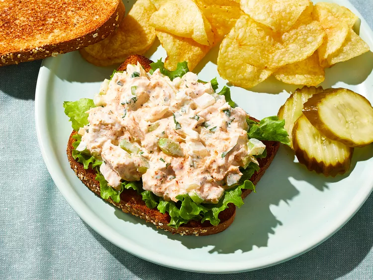

Tuna Fish Salad

This tuna fish is excellent served on top of a green salad
or between two pieces of bread with fresh lettuce.
Sprinkle a little paprika on top to add a little flavor and color.
This recipe is actually very simple! It's really basically just one step.
But for the purposes of this exercise, it'll be expanded just a bit!
By the end of this recipe, you'll have a brand spanking new snack to try!
It's super easy and quick to make. You'll love it!
Ingredients
- 1 (5 oz) can tuna, drained
- 1/2 cup mayonnaise
- 1/4 cup chopped celery
- 1/4 cup chopped onion
- 1 tbsp chopped fresh parsley
- 1/2 tbsp lemon juice
- 1/4 tsp garlic powder
- 1/8 tsp salt
- 1/8 tsp ground black pepper
- 1 pinch paprika (or to taste!)
Steps
- Combine tuna, mayonnaise, celery, onion, parsley, lemon juice, garlic powder, salt, and pepper in a large bowl; mix well.
- Season with paprika (use it to your heart's desire!)
- Refrigerate until chilled.
- And you're done! Serve it on some toast or plain bread. You can even have it with rice! Go wild!